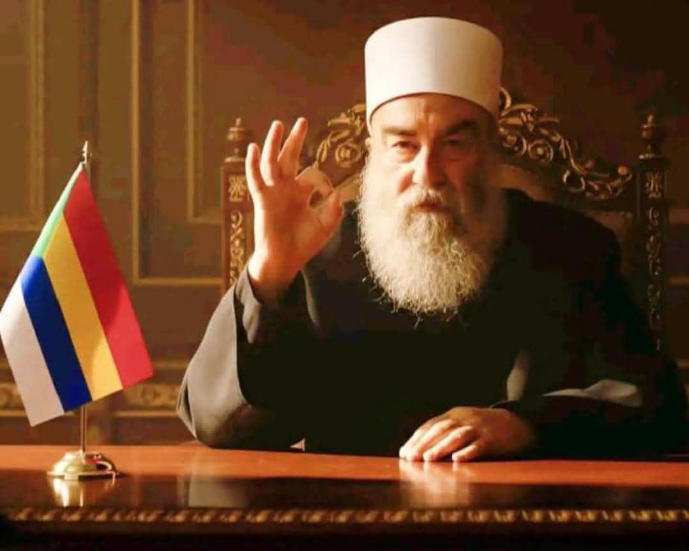
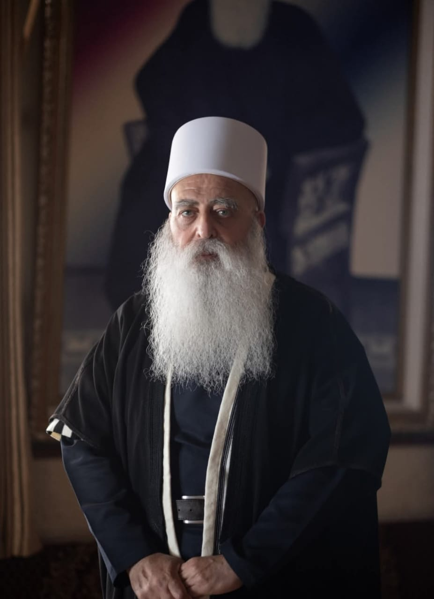

قبل أي تمثيل سياسي أو ديني، فإن من يمثل السويداء هم أولياء الدم...
في الداخل، برز موقف واضح تمثّل في الشيخ حكمت الهجري
أما خارج السويداء، فيُعد الشيخ موفق طريف من أبرز الشخصيات
تبقى هذه المواقف تعبيراً عن لحظة تاريخية حساسة

يمثل موقفاً بارزاً داخل السويداء . كان من اوائل من ادرك طبيعة المرحلة و مخاطرها , و اتخذ موقفاً ثابتا منذ البداية .اليوم يُنظر اليه كالصوت الاول في السويداء

من أبرز الشخصيات التي عبّرت عن موقف داعم خارج السويداء، وساهم في نقل الصورة إلى الخارج.و سلط الضوء على ما يجري .
الذاكرة مقاومة
as.suweidastory@gmail.com